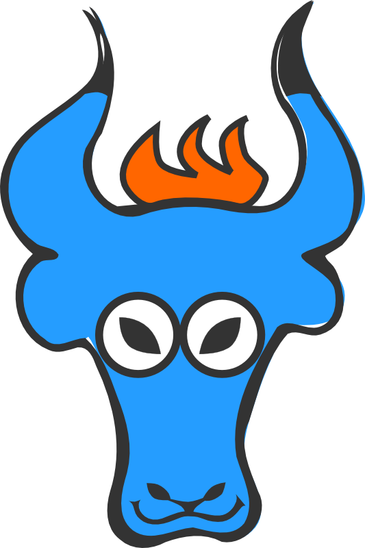

Use the space bar or arrow keys to browse the slide.
Some of the images are pretty big, so if you see an empty slide then wait a bit.

A library for building APIs
It serializes objects
It’s specialized in Hypermedia
We needed it (we = Ticketsolve)
Not a lot available for Hypermedia
No existing libraries fitted the bill
Small and friendly
Github issues, Gitter chat
Main contributions: improvements to specific formats
Use it! report back!
Join the discussion
Coding and non-coding skills needed
Recent focus: improving mutation coverage
Better testing story
Better docs, examples
Format support: Siren, JSON-LD
Read-write support
Better HTML output
Several issues marked ROSSConf or Beginner Friendly in Github
Ruby / HTML / CSS task
Fun task because creative and immediate feedback
Tests code examples in documentation
8 out of 30 currently fail
Cool because you learn a useful new tool
Turn this
class FooMapper < Yaks::Mapper
attributes :bar
def bar
object.baz
end
end
into
class FooMapper < Yaks::Mapper
attribute :bar do
object.baz
end
end
Slightly more advanced task
JSON-based format that’s becoming popular
Maps very well to Yaks’s abstractions
Great for learning about how Yaks works